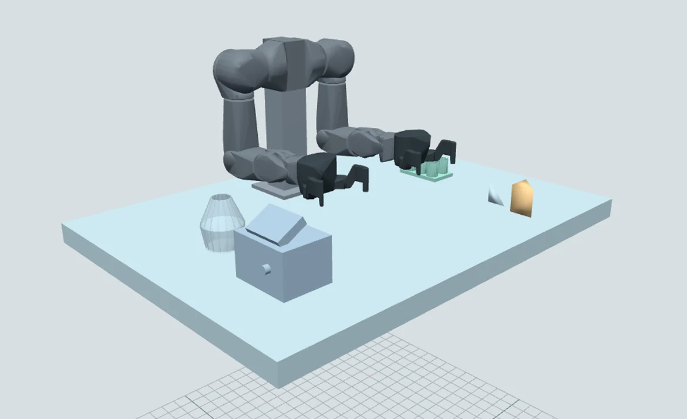

A real Python workspace
Edit robot programs, run the selected starter and inspect commands, telemetry and errors. Save code drafts locally or export a workspace for later use.
A browser IDE for learning and experimenting with robotics. Write Python, construct laboratory scenes and collaborate with an AI agent through bounded WebMCP tools.
No robot required to explore. Simulation is not hardware validation.

01 Construct equipment beyond the catalog02 Stage, inspect and apply the scene03 Evaluate observed robot interactionOne workspace, several ways to explore
Keep the program, the scene and its evidence together. Capabilities vary by robot and workspace; the IDE labels their boundaries.
Edit robot programs, run the selected starter and inspect commands, telemetry and errors. Save code drafts locally or export a workspace for later use.
Physical workspaces use MuJoCo observations for motion and contacts. Requested targets and measured results remain distinct. A command completing does not, by itself, establish task success.
OpenArm’s general builder accepts rotated components, hollow profiles, repeated parts and validated convex meshes. Author the bench, record assumptions and inspect the collision model.
Enable Agent Assist in a compatible WebMCP host to expose bounded inspection, scene and robot tools. You retain Stop and access controls; the tools do not publish code or control real hardware.
Photo-guided scene authoring
Give a laboratory photo to your multimodal agent. The agent interprets it and describes new equipment through the builder—not just a fixed list of equipment names.
The app validates the submitted geometry. It does not independently recognize image content, recover hidden mechanisms or calibrate dimensions from a photograph.
List visible items, uncertain geometry and unresolved equipment. Keep estimated dimensions and layout adjustments explicit.
Stage a bounded scene and check a disposable physics candidate. Only explicit application replaces the active workcell.
Define a supported task before grasping. Read contact, lift, carry, release and settled-placement evidence instead of assuming the command worked.
Robot workspaces
Choose a workspace for its supported experiment, not an implied promise that every robot can perform every task.
Bimanual manipulation
Two-arm rigid-body manipulation, contact diagnostics and general laboratory scene authoring. The main focus of the new visitor manuals.
Open OpenArm →Robot arm
A physical block-transfer benchmark with Python control and observed grasp, transport and release checks.
Open SO-101 →Mobile platform
A physical mobile-courier workspace. Read the selected task’s controls, source assumptions and evidence limits.
Open LeKiwi →Experimental humanoid
Actuator, whole-body dynamics and standing experiments. Bounded motion attempts are not a verified general walking or grasping capability.
Open Asimov →Policy-driven contact
Physical locomotion, ground-contact and ball-kick tasks with pinned policy/runtime assumptions. No physical roller mode is claimed.
Open MicroDuck →Humanoid dynamics & poses
Bounded physical dynamics and standing, plus a separate kinematic pose workspace. Walking and dexterous-hand control are not supplied.
Open Unitree →Simulation parameters and authoring limits are not hardware measurements or payload ratings. No laboratory liquids, chemical processes or automatic collision-free motion planner are included in the general scene builder.
Start with an experiment
For a first visit, choose OpenArm, wait for Ready and explore its reference program. The guides explain how to progress to your own scenes and agent-assisted work.
Launch the OpenArm workspace ↗A desktop browser is recommended for editing. The manuals work on mobile. The IDE needs access to its model and runtime assets.